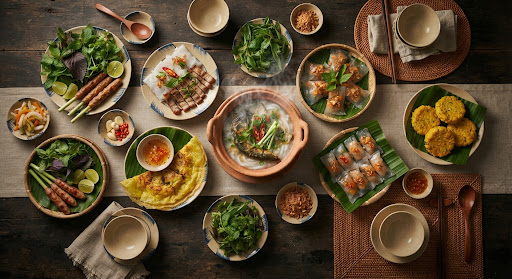
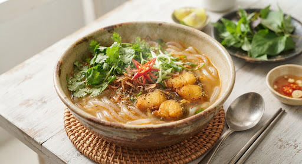
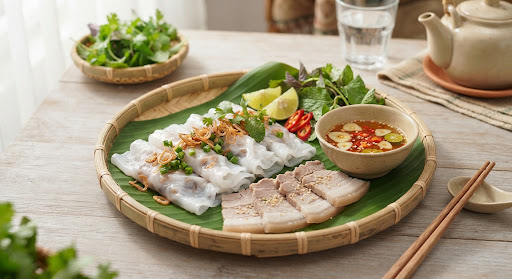
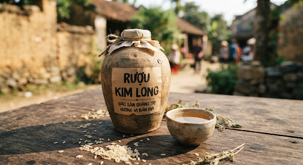

Vĩnh Linh · Cùa
Bún nghệ (bún lòng xào nghệ)
Lòng heo xào nghệ tươi đất đỏ Vĩnh Linh, tiêu xanh vùng Cùa, đảo với bún đến hơi cháy cạnh. Màu vàng, cay nồng. IPA Quảng Trị xếp đây là món dân dã nên thử khi ghé Đông Hà.

Ẩm thực đất lửa
Tỉnh mới ăn hai bếp: Hải Lăng – Đông Hà (cháo bột, bánh ướt, rượu Kim Long) và Đồng Hới – Nhật Lệ (cháo canh, bánh lọc, tôm nhảy). Ớt, nén, tiêu Cùa, ram và cải xanh — tô nào cũng nóng hai lần.
Cháo bột
Còn gọi bánh canh cá lóc, cháo vạt giường. Đặc sản Hải Lăng.
Bánh ướt
Làng Phương Lang gần trăm năm. Đông Hà ăn kèm thịt nướng, lòng.
Rượu Kim Long
Làng nghề hơn 200 năm, nấu nồi đồng, xã Hải Bình.
Cháo canh
Bếp Đồng Hới. Sợi bột mì hoặc bột lọc, ram, cải xanh.
Ăn ở đâu
Hải Lăng, Đông Hà, Đồng Hới, biển, bản.

Hải Lăng · Diên Sanh
Người Quảng Trị gọi một món ba tên: cháo bột, bánh canh cá lóc, cháo vạt giường. Sợi bột gạo cán mỏng, cắt dải dài như thanh tre vạt giường xưa — dai đến mức ăn bằng đũa, không thìa.
Nguồn: Tuổi Trẻ (3/2024); cổng huyện Hải Lăng; bài viết du lịch địa phương.
Hải Ba · Phương Hải
Làng nghề gần một thế kỷ — nay là thôn Phương Hải, xã Hải Ba (Hải Lăng). Bánh tráng hơi, mỏng, dẻo, cầm không dính tay. Ăn nóng hay nguội đều được.
Nguồn: IPA Quảng Trị; cổng thông tin huyện Hải Lăng; Tuổi Trẻ.


Hải Bình · Làng nghề 2014
Làng Kim Long (xã Hải Bình, trước thuộc Hải Quế) nấu rượu thủ công hơn 200 năm, chưng cất bằng nồi đồng, dựa nước giếng và khí hậu nắng gió Hải Lăng. Được công nhận làng nghề truyền thống năm 2014.
Nguồn: Cổng huyện Hải Lăng; Báo Đại đoàn kết (3/2025); Nông nghiệp và Môi trường.
Đồng Hới · Nhật Lệ
Người Quảng Bình gọi cháo canh nhưng đây không phải cháo. Sợi bột mì (hoặc bột gạo / bột lọc) cán dẹt, cắt tay, nấu nước xương heo với cá lóc, tôm hoặc rạm. Ăn kèm rau cải xanh thái nhỏ và ram chiên — khác tô cháo bột Hải Lăng (sợi gạo, nước cá, ăn đũa).
Nguồn: Báo Lao Động; bài viết ẩm thực địa phương Đồng Hới. Không lập tên quán.

Tuổi Trẻ và cổng IPA tỉnh còn nhắc gà kho nén, bún lòng xào nghệ, cá um chua, bánh lọc Mỹ Chánh, nem lụi chợ Sải. Dưới đây là những món du khách tìm được thật.
Vĩnh Linh · Cùa
Lòng heo xào nghệ tươi đất đỏ Vĩnh Linh, tiêu xanh vùng Cùa, đảo với bún đến hơi cháy cạnh. Màu vàng, cay nồng. IPA Quảng Trị xếp đây là món dân dã nên thử khi ghé Đông Hà.
Cam Lộ · củ nén
Gà ta — lý tưởng gà Cùa (Cam Chính, Cam Nghĩa, Cam Thành) — kho củ nén giã nhuyễn, nước mắm, tiêu. Ăn với xôi hoặc bánh ướt. Củ nén là gia vị dải Bắc Trung Bộ, không thay bằng hành tây.
Đông Hà
Phố Đông Hà: bún thịt nướng với nước lèo sánh; bánh khoái giòn nhân tôm thịt; chè đậu ván, đậu xanh buổi chiều. Tiện hơn là “tour đặc sản” — hỏi người bán món nào đang hết.

Cửa Tùng · Cửa Việt
Tôm, mực, cá mú theo tàu sáng. Cháo hàu, bánh ướt thịt heo cũng có ở quán biển. Giá hải sản đổi từng ngày — hỏi cân trước khi gọi. Mùa biển lặng dễ ăn hơn mùa gió Lào.
Hải Lăng
Cổng IPA tỉnh nhắc hai món này cùng bánh ướt Phương Lang. Bánh lọc bột lọc nhân tôm thịt; nem lụi nướng than. Hỏi ở chợ huyện hoặc quán sáng — không phải món “show” khách sạn.

Hướng Phùng · Kim Ngân
Cơm lam, gà bản, măng rừng, bánh mè khi có khách. Ăn tại homestay Đoong Bui (Chênh Vênh) hoặc tổ phụ nữ Hà Lẹc — gọi trước. Chi tiết trên trang cộng đồng.
Xem cộng đồng arrow_forwardKhông lập danh sách quán “top 10” bịa. Đi theo vùng: Hải Lăng – Đông Hà, hoặc Đồng Hới – Nhật Lệ – Phong Nha.
Cháo bột / bánh canh ở Diên Sanh và ngã ba huyện. Bánh ướt tại làng Phương Lang (Phương Hải, Hải Ba). Rượu tại làng Kim Long, xã Hải Bình. Hỏi người bán “cháo bột” chứ đừng chỉ nói “bánh canh” — họ hiểu món nhà.
Trung tâm tiện: bánh ướt thịt nướng hoặc lòng, bún thịt nướng, bún nghệ, chè đậu. Phù hợp ngày đi Thành Cổ. Chợ và phố ăn sáng đông hơn khách sạn.
Hải sản theo tàu. Kết hợp tắm biển. Đừng đặt cả mâm nếu đi một mình — gọi theo cân, hỏi giá trước. Mùa đông gió Lào, quán có thể ít hàng.
Sáng ăn cháo canh ở phố / chợ Đồng Hới. Chiều hải sản Nhật Lệ hoặc Bảo Ninh. Hỏi “cháo canh” — đừng gọi “bánh canh” nếu muốn đúng miệng người Bắc Trung Bộ phía này.
Quán dọc đường vào động phục vụ cháo canh, hải sản sông Son. Giá khu du lịch thường cao hơn phố Đồng Hới. Ăn no trước tour thuyền vào động Phong Nha.
Ăn tại nhà sàn đã đặt. Không kỳ vọng thực đơn à la carte. Mua mật, rượu cần, thổ cẩm trực tiếp hộ dân — đó là thu nhập cộng đồng, không phải quà siêu thị.
Nói trước nếu không ăn cay. Tô cháo bột “đúng điệu” cay hơn tô khách. Xin ớt để riêng được.
Cá lóc đồng có xương nhỏ. Ăn chậm. Trẻ nhỏ nên gỡ cá.
Rượu Kim Long là rượu mạnh. Mua hộp có nhãn, không uống thử bên đường rồi lái xe đèo Sa Mù.
Giá trên trang là mức báo chí từng nêu. Hỏi lại tại quán. Không có “combo di sản” cố định.